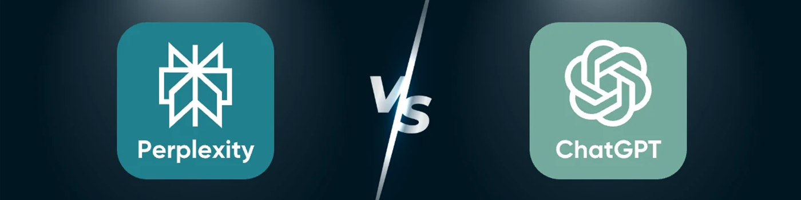
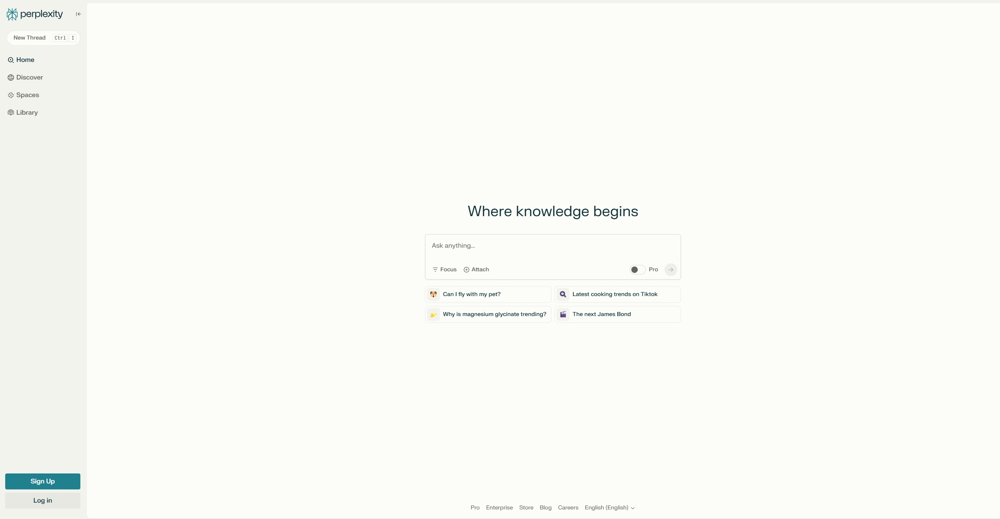
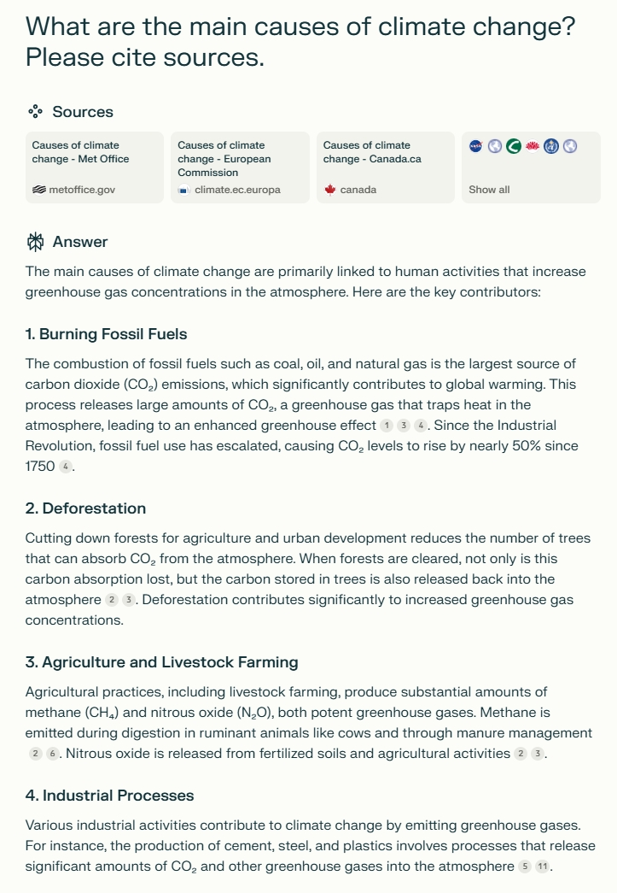
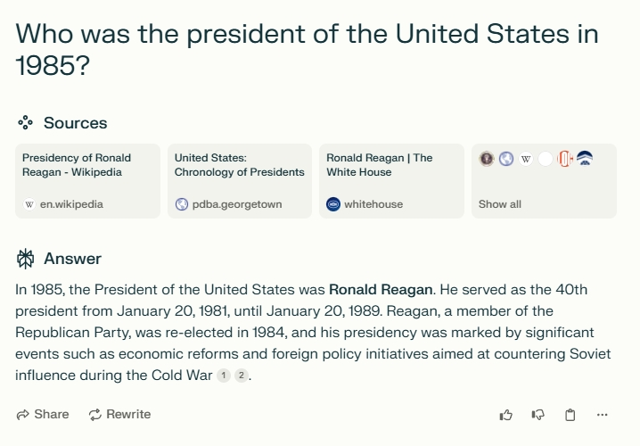
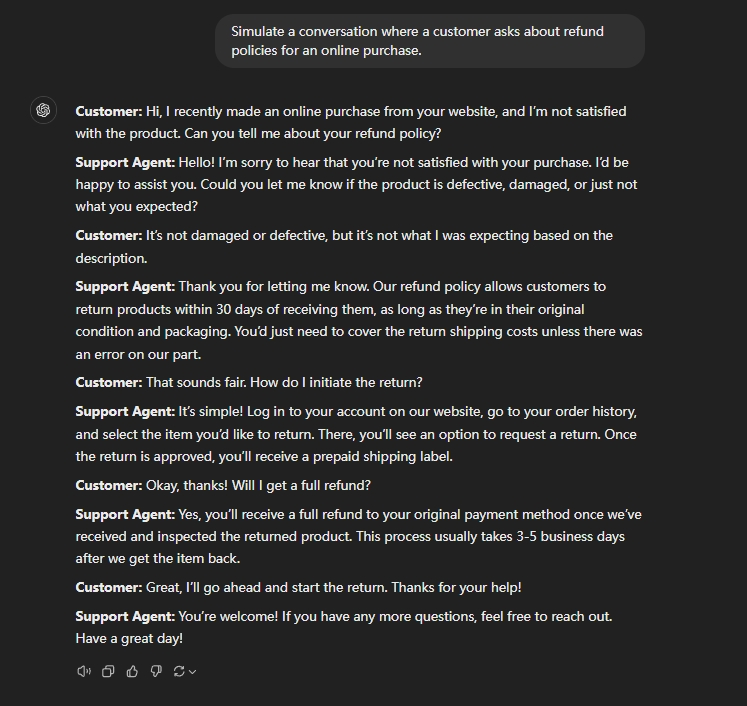
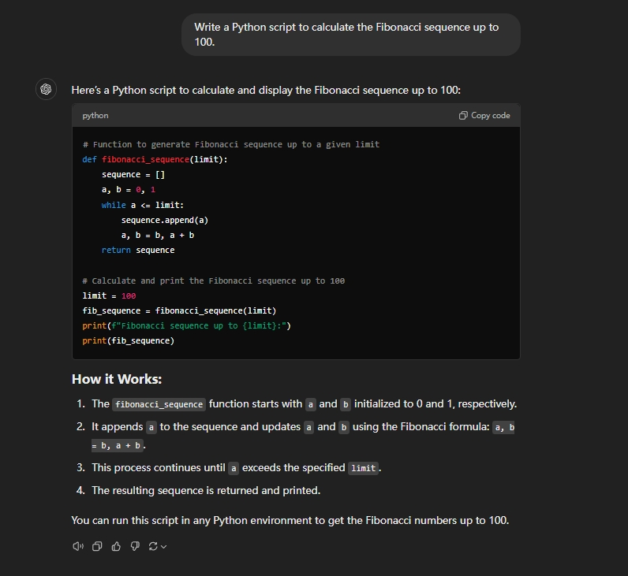

Perplexity 与 ChatGPT：哪种 AI 工具更好？
人工智能彻底改变了我们的工作、沟通和创作方式，而这场变革的核心正是
随着对AI 工具比较的需求日益增长，用户越来越多地提出同一个问题：Perplexity 还是 ChatGPT，哪个工具更适合我的需求？虽然两者都功能强大，但它们迎合了不同的受众和用例，了解这些差异是做出正确选择的关键。
在本文中，我们将深入探讨
Perplexity AI 概述
Perplexity AI 是一款人工智能驱动的问答引擎，能够为用户查询提供准确、可信且实时的响应。与提供链接列表的传统搜索引擎不同，Perplexity AI 整合来自多个来源的信息，提供简洁直接的答案，并附带内联引用，方便用户验证。
Perplexity AI 的主要特点
简洁的信息检索： Perplexity AI 擅长提供复杂主题的简洁摘要，使用户无需筛选大量搜索结果即可快速掌握重要信息。响应的准确性： 通过汇总来自信誉良好来源的数据并包含引文，Perplexity AI 确保用户收到可靠且可验证的信息。
Perplexity AI 的理想用例
研究： 学生和专业人士可以利用 Perplexity AI 快速概览并详细了解各个主题，从而简化研究流程。问答： 对于需要事实答案的简单查询，Perplexity AI 提供精确、即时的响应，使其成为满足日常信息需求的宝贵工具。
Perplexity AI 的局限性
Perplexity AI 虽然擅长提供事实信息，但在需要创意内容生成或深入对话参与的任务中，其表现可能略逊一筹。此外，它依赖于现有的网络资源，这意味着响应的质量取决于可用的数据。
ChatGPT 概览
ChatGPT 由 OpenAI 开发，是一种先进的对话式 AI 模型，旨在根据用户提示生成类似人类的文本响应。它利用深度学习技术，能够就各种主题进行连贯且符合语境的对话。
ChatGPT 的主要功能和优势
对话灵活性： ChatGPT 能够熟练地处理各种对话场景，从随意的闲聊到复杂的讨论，使其成为适用于各种应用的多功能工具。内容生成中的创造力： 除了标准对话之外，ChatGPT 还可以制作故事、诗歌和文章等创意内容，展示其创作富有想象力和原创文本的能力。
ChatGPT 的理想用例
客户支持： 企业采用 ChatGPT 自动响应常见的客户询问，提高效率并提供及时的帮助。创意写作辅助： 作家和内容创作者利用 ChatGPT 集思广益、起草内容并克服写作障碍，受益于其创意文本生成功能。编码辅助： 开发人员发现 ChatGPT 有助于生成代码片段、调试错误和理解编程概念，从而简化编码过程。
ChatGPT 的局限性
尽管 ChatGPT 有诸多优势，但也存在一些局限性。它偶尔可能会产生冗长或过于详细的回复，并且存在生成不准确或无意义信息的风险，即所谓的"幻觉"。因此，用户必须审慎评估其输出，并在必要时验证信息。
各项对比：Perplexity 与 ChatGPT
在 Perplexity AI 和 ChatGPT 之间进行选择，需要仔细研究它们的功能、可用性、性能和数据隐私考虑。这两种工具在各自的领域都表现出色，但它们的优缺点可以满足不同的用户需求。
| 特征 | Perplexity AI | ChatGPT |
|---|---|---|
| 准确性 | 高度准确、经过验证的答复 | 总体准确，有些错误 |
| 创造力 | 有限的 | 高（故事、编码、内容） |
| 语言流利度 | 简短且事实 | 对话式且优雅 |
| 易于使用 | 简单，适合初学者 | 为所有用户提供广泛的功能 |
| 多语言支持 | 主要使用英语 | 多种语言 |
准确性
Perplexity AI 擅长通过直接从网络获取信息并附上引文进行验证，从而提供精准、基于事实的答案。相比之下，ChatGPT 则基于其训练数据生成答案，而这些数据可能并非总是反映最新信息。
创造力
ChatGPT 以其创作富有创意且语境丰富的内容的能力而脱颖而出，使其成为讲故事和内容生成等任务的理想选择。然而，Perplexity AI 专注于事实准确性，这可能会限制其创造性成果。
语言流利度
这两个平台都提供流畅的语言功能，但 ChatGPT 的大量训练数据使其能够处理更广泛的对话细微差别。
定制
ChatGPT 提供了更多定制机会，允许用户根据特定需求定制交互。Perplexity AI 提供了更标准化的响应格式。
易于使用
Perplexity AI 的界面简洁易用，无论是初学者还是寻求快速获得事实答案的专业人士都能轻松上手。ChatGPT 的界面支持更复杂的交互，新用户可能需要一定的学习时间。
速度
Perplexity AI 通过从网络获取实时数据来提供快速响应。ChatGPT 的响应时间通常很快，但会根据服务器负载和查询复杂度而有所不同。
回应深度
ChatGPT 提供更深入、更详尽的答案，适合进行详细讨论。Perplexity AI 则专注于简洁、切中要点的回答。
多语言支持
ChatGPT 支持多种语言，增强了其多功能性。Perplexity AI 主要以英语运行，这可能会限制非英语人士的学习。但它还支持 30 多种其他语言。
数据隐私和安全
这两个平台都采取了保护用户数据的措施。然而，用户在分享敏感信息时应谨慎，因为人工智能聊天机器人可能成为网络威胁的目标。建议查看每个平台的隐私政策，了解其数据处理方式。
总而言之，Perplexity AI 非常适合寻求准确、实时信息和简洁响应的用户，因此非常适合研究和快速事实核查。相反，ChatGPT 提供富有创意且细致的对话能力，有利于内容创作、编码辅助和客户支持。选择合适的工具取决于你的具体需求和要完成的任务的性质。
用例和建议
在 Perplexity AI 和 ChatGPT 之间进行选择取决于你的具体需求。下文将概述每种工具的实用场景，并附上示例提示，帮助你了解如何有效地使用它们。
Perplexity AI用例
学术研究
Perplexity AI 的优势在于提供简洁、基于事实且有引证依据的答案。它非常适合快速收集见解或验证信息等任务。
示例提示：气候变化的主要原因是什么？请注明来源。
快速事实核查
无论你确认的是日期、统计数据还是历史事实，Perplexity AI 都能确保你快速获得验证数据。
示例提示：1985 年美国总统是谁？
ChatGPT用例
创意写作
ChatGPT 在生成故事、诗歌或营销文案等创意内容方面表现出色。
示例提示：写一篇关于一只时间旅行猫的短篇故事。
客户支持
企业可以使用 ChatGPT 模拟类似人类的对话来进行客户服务。
示例提示：模拟客户询问在线购买退款政策的对话。
编码协助
开发人员可以使用 ChatGPT 获得编程帮助，从调试到编写代码片段。
示例提示：编写一个 Python 脚本来计算 100 以内的斐波那契数列。
定价和可访问性
了解 Perplexity AI 和 ChatGPT 的成本和可访问性，可以帮助用户选择最符合其预算和需求的工具。虽然这两个平台都提供了灵活的选项，但它们的定价结构和访问模式却迎合了不同的用例。
订阅模式和免费试用
Perplexity AI： 提供免费版本，包含基本搜索功能和每日有限次数的专业搜索。如需增强功能，Perplexity Pro 订阅费用为每月 20 美元 ，可访问高级 AI 模型并提升每日专业搜索次数。ChatGPT： 提供免费套餐，包含标准功能。ChatGPT Plus 订阅价格为每月 20 美元 ，可享受高峰时段的常规访问权限、更快的响应速度以及优先使用新功能和改进等优势。
无障碍设施
Perplexity AI： 可通过网页浏览器访问，界面友好，适合初学者和专业人士。它还提供 API 集成，允许开发人员将其 AI 搜索功能嵌入到自己的项目中。ChatGPT： 可通过网页浏览器访问，并拥有专用的移动应用程序，增强了跨设备的可访问性。它支持 API 集成，可无缝集成到各种应用程序和工作流程中。
最后的想法
在这些工具之间的选择应该与你的个人目标相符。如果你优先考虑准确性和简洁性，Perplexity AI 是一个合适的选择。如果你追求更具动态性和创造性的互动，ChatGPT 会更有利。
为了做出明智的决定，不妨考虑探索这两个平台。像 环球巴士 这样的服务以实惠的价格提供这些AI工具，让你能够亲身体验最符合你需求的平台。
通过了解 Perplexity 和 ChatGPT 的独特优势，你可以选择最符合你目标的 AI 助手。